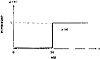

by Abraham Kandel
CRC Press, CRC Press LLC
ISBN: 084934297x Pub Date: 11/01/91
|
|
Fuzzy Expert Systems
by Abraham Kandel CRC Press, CRC Press LLC ISBN: 084934297x Pub Date: 11/01/91 |
| Previous | Table of Contents | Next |
*The earlier version of this paper was presented at the second Conference on Artificial Intelligence Applications, Miami Beach, FL, December 11-13, 1985. This paper is based on “Expert System On A Chip: An Engine For Approximate Reasoning” by M. Togai and H. Watanabe which appeared in IEEE Expert, Vol. 1, No. 3, pp. 55-62, Fall 1986.© 1986 IEEE.
Masaki Togai
Horoyuki Watanabe
The information used in decision-making or reasoning processes may be uncertain, imprecise, or even vague and incomplete. Inference procedures with uncertainty are becoming more important in rule-based expertlike systems since the knowledge given by a human expert is often uncertain or imprecise.
In this paper, we report on the design of an inference architecture and a chip using a VLSI technology to cope with uncertainty and perform approximate reasoning. To deal with uncertainty, we employ fuzzy logic based on fuzzy set theory.14 An inference structure suitable for hardware implementation is proposed and realized as a custom VLSI chip by using two simple units: circuits to calculate maximum and minimum elements. The design is also extensible to handle a large number of rules, and the speed of inference is almost independent of the number of rules. We will describe the simplicity, extensibility, and efficiency of the proposed design.
Fuzzy logic has been successfully used in several expert systems.5,15 One example is CATS, a diesel locomotive diagnosis system.2 This system currently contains approximately 530 rules and will soon be increased to approximately 1200 rules. Fuzzy inference is also proposed in real-time decision making in the area of command and control7 to select the most suitable guidance algorithm for intercepting missiles. Selection is done by considering a constantly changing environment, that is, the relative angular positions, accelerations, and distances of an evader and a missle. These examples show the need for an efficient inference engine to handle large rule sets and for real-time use.
Expert systems consist of a body of knowledge (knowledge base) and a mechanism (inference engine) for interpreting the knowledge. A knowledge base consists of facts and rules. The information in the knowledge base is a propositional statement of the form:
The (attribute) of (object) is (value)
or alternatively expressed as an ordered triple of the form:
(attribute, object, value)
Examples of such a triple are
The attribute value may not be precisely known. In such a case the mutually exclusive possible values of the attribute of the object can be represented by a weighted distribution on the attribute domain. Practically, two kinds of characteristic functions can be used: probability and grade of membership.15 The grade of membership is especially appropriate for encoding vague concepts expressed in a natural language. The possible value of an attribute will be well illustrated in the following examples:
(AGE, JOHN, >50) … The age of John is over 50
where “>50” is represented by a crisp membership function defined on the universe of discourse, i.e., U = [0,120] by:

Figure 1 Knowledge representation with crisp membership over 50.
Figure 2 Knowledge representation with fuzzy membership. (A) Old; (B) approximately 100.
The membership function for this attribute value is illustrated in Figure 1.
The attribute value could be more vague and imprecise:
where “old” and “≈100” are represented by membership functions as shown in Figure 2A and B, respectively.
Notice that at this point we diverge from the conventional representational approach to expert systems. In the conventional systems, such as MYCIN, the value of the attributes are left as symbols, words, or values with no meaning. That is, the data:
The temperature of John is high
is left in this form; no attempt is made to give any meaning to the attribute value “high”. The approach we suggest is based upon the idea of fuzzy subsets introduced by Zadeh, where the value of attribute, i.e., high is characterized by the grade of membership or membership function.
A precise value, on the other hand, can be represented as a membership function which is equal to one at the point where precise value is known and is zero elsewhere.
| Previous | Table of Contents | Next |
){kind=link}
){kind=link}